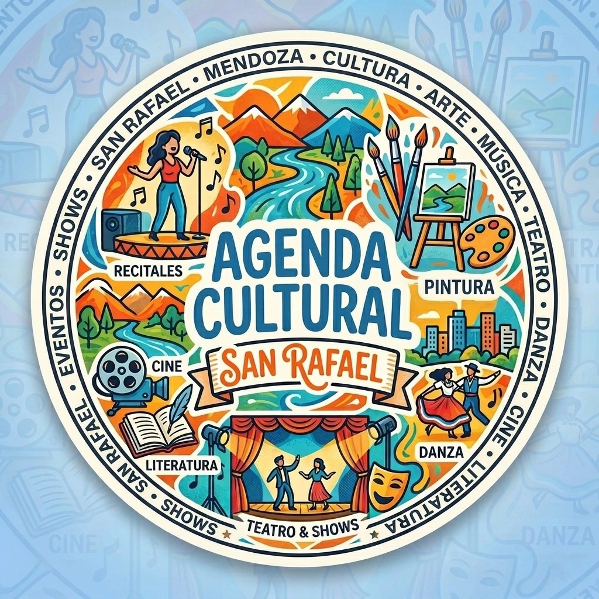
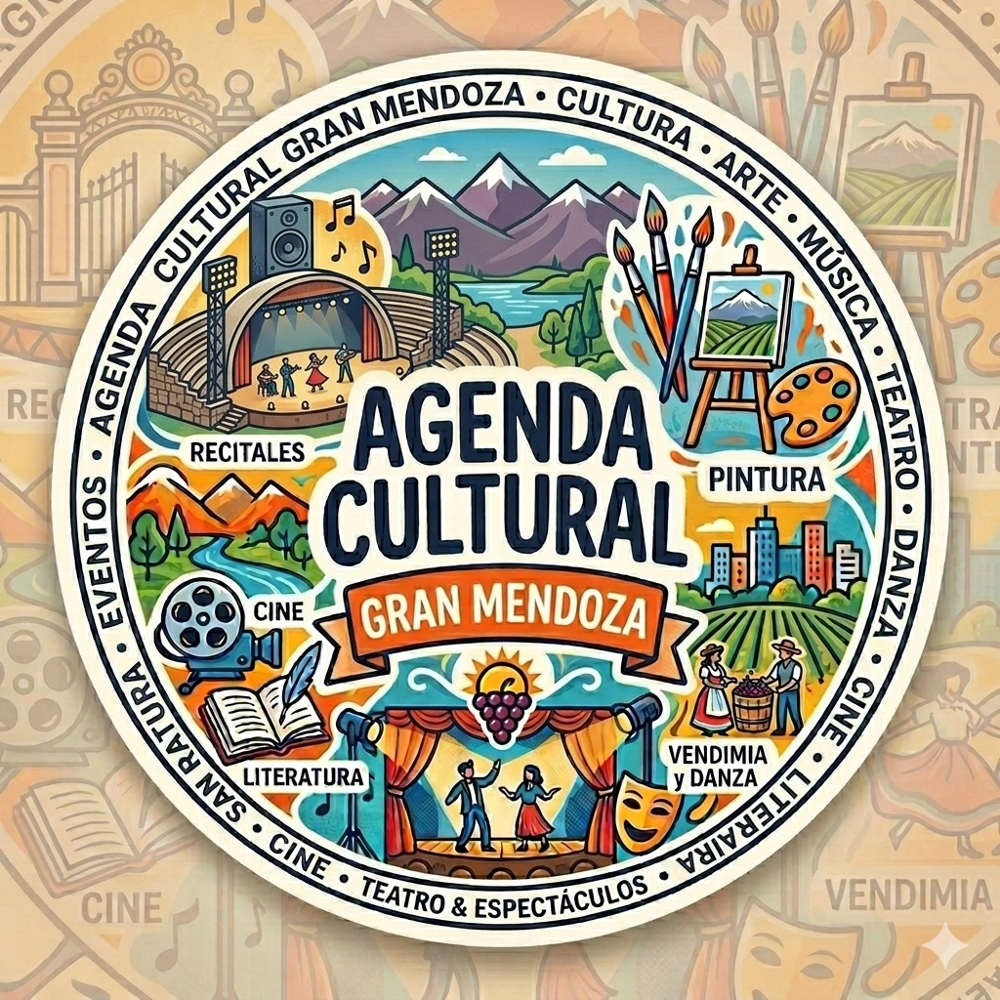

Qué hacer en Mendoza:
Agenda de eventos, recitales y salidas
Encontrá la cartelera completa con los mejores recitales, fiestas, obras de teatro y espectáculos cerca tuyo en todo el territorio mendocino. ¡Sumate a nuestra comunidad!
Buscador de eventos por zona
Elegí tu localidad para ver la cartelera de actividades y shows disponibles

Zona Sur
Agenda completa de recitales, peñas, obras de teatro, ferias y eventos culturales en San Rafael y alrededores.

Gran Mendoza
Fiestas, recitales, teatro y salidas en Ciudad de Mendoza, Luján de Cuyo, Las Heras, Godoy Cruz, Guaymallén y Maipú.

Zona Este
PróximamenteFestivales, toques, muestras de arte y shows en San Martín, Rivadavia y Junín.
La cartelera de espectáculos más completa de Mendoza
Si te preguntás qué hacer este fin de semana en Mendoza, nuestra agenda reúne las mejores opciones de entretenimiento en un solo lugar. Encontrá desde recitales en Godoy Cruz y sunsets en Luján de Cuyo, hasta obras de teatro en la Ciudad de Mendoza y eventos culturales en Guaymallén, Maipú y Las Heras.
Además, contamos con la cobertura del Sur provincial con eventos en San Rafael, General Alvear y Malargüe, incluyendo peñas folclóricas, festivales, ferias artesanales y espectáculos para toda la familia. Nuestra propuesta conecta la movida del Gran Mendoza, el Sur y la Zona Este (San Martín, Rivadavia, Junín) para que encuentres tu próximo plan de forma rápida y actualizada.